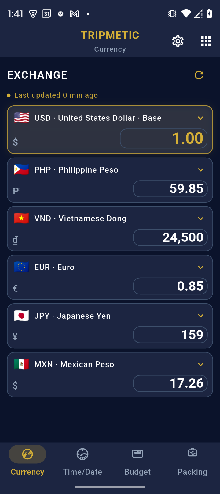
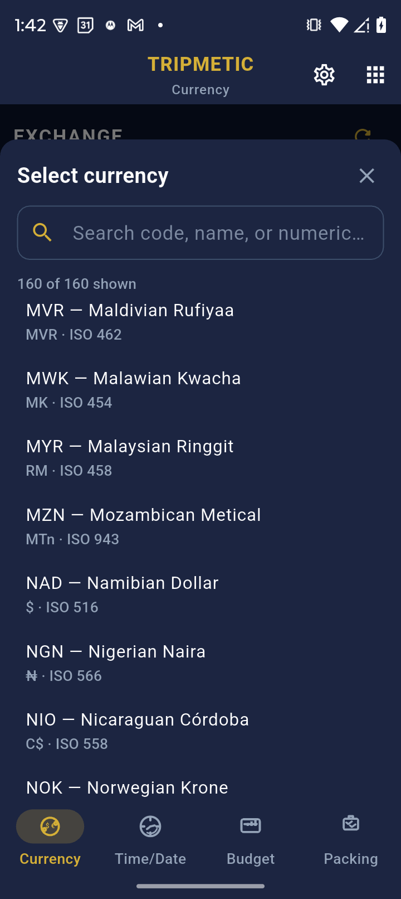
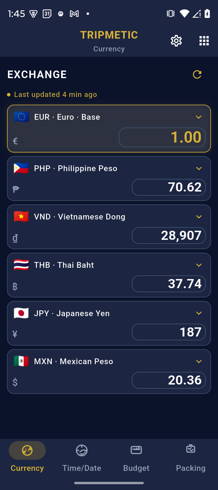
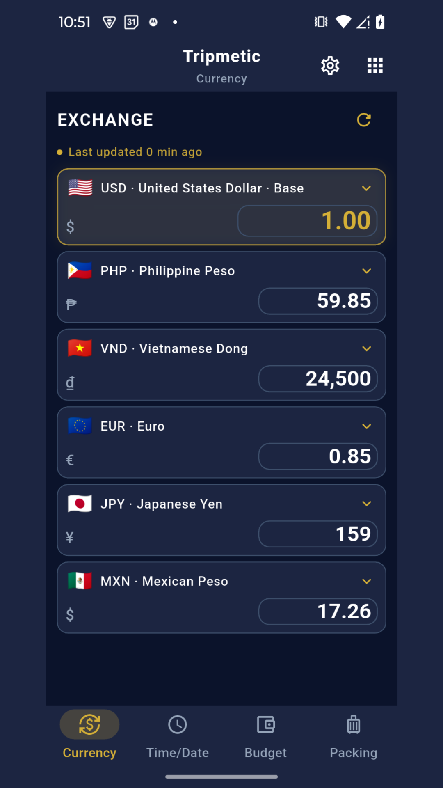

Travel currency converter that works offline
A smart currency converter for travel shouldn’t die when you lose signal. Tripmetic caches live market rates on your device so you can convert menu prices, taxi fares, and shopping tags in Airplane Mode—then sync again when you’re back online.
Use it alongside the multi-country budget tracker and crypto converter so spending abroad stays clear in your home currency.
Here’s how to use the converter for fiat and crypto while you travel.
Open the currency calculator — no account required. It uses the same Tripmetic exchange rates and keeps the last download on this device for offline use.
1 Select Your Fiat Currency Pair
Open the Currency tab. You will see two currency selectors representing your Base (home) currency and your Target (destination) currency. Tap either flag to open the global database and select the specific fiat currencies you need to compare.

2 Instant High-Fidelity Calculation
Use the built-in numeric keypad to enter the price you see on the local menu or price tag. The moment you press a number, the engine calculates the conversion using live market exchange rates. You can seamlessly tap the reverse arrow icon to flip the conversion direction instantly.

3 Crypto Integration
For modern digital nomads, fiat is only half the equation. Navigate to the More Tools menu and tap Crypto to access the digital asset converter. This tool allows you to pull real-time conversions between major cryptocurrencies (like Bitcoin or Ethereum) and the local fiat currency of the country you are visiting.

4 Offline Resiliency
The true power of the Tripmetic architecture is its offline capability. When you open the app on an airplane or in a remote area without cellular service, the converter does not break. It securely pulls the most recently cached market data from your local device storage, allowing you to run accurate conversions while entirely off-grid.

Frequently Asked Questions
When your device is connected to the internet, the application pings our backend infrastructure to fetch live market rates. If you leave the app open, you can manually trigger a refresh to pull the absolute latest numbers.
Yes. We utilize an enterprise-grade local caching system. If you lose connection, the app relies on the last downloaded data point, ensuring your travel logistics are never interrupted by a lack of Wi-Fi.
Tripmetic provides the "Interbank" exchange rate—the true, baseline market value. Local ATMs, currency exchange booths, and credit card processors will often add their own spread or foreign transaction fees on top of this baseline. Use Tripmetic to verify that a vendor's markup is fair.